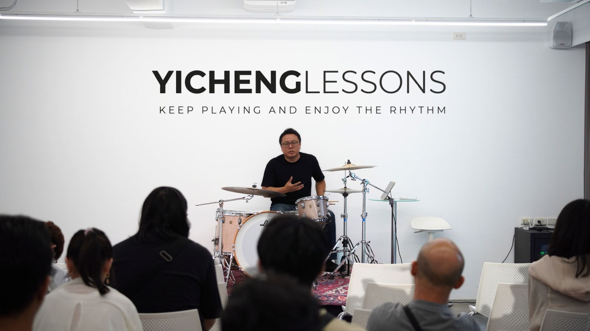
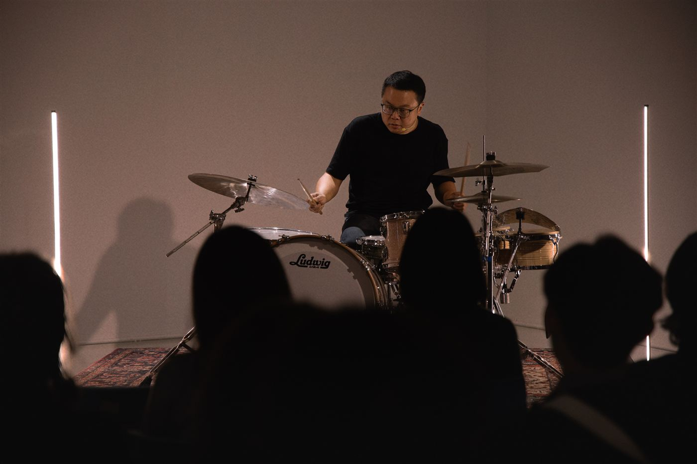
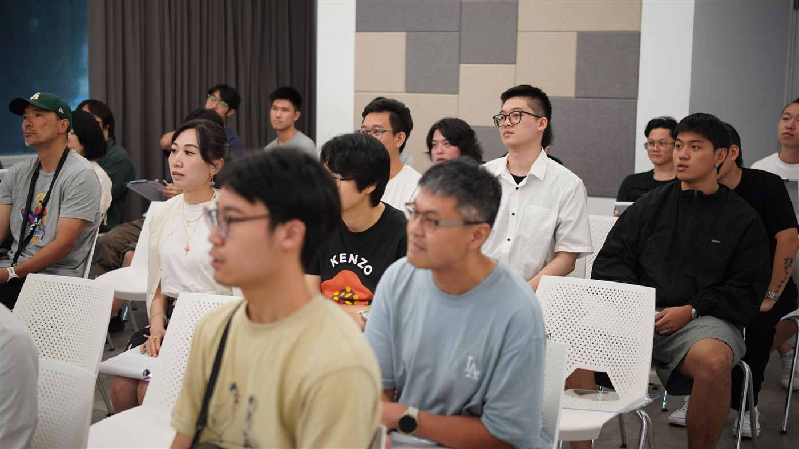
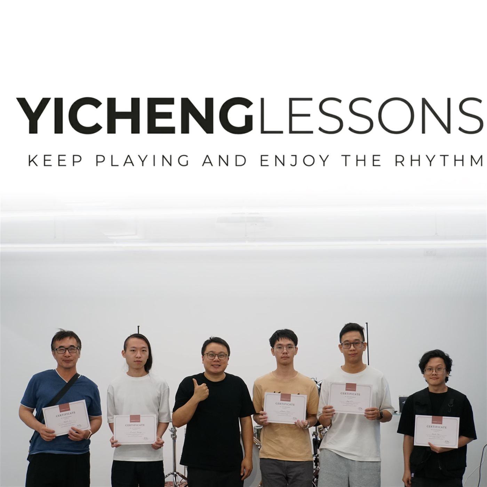
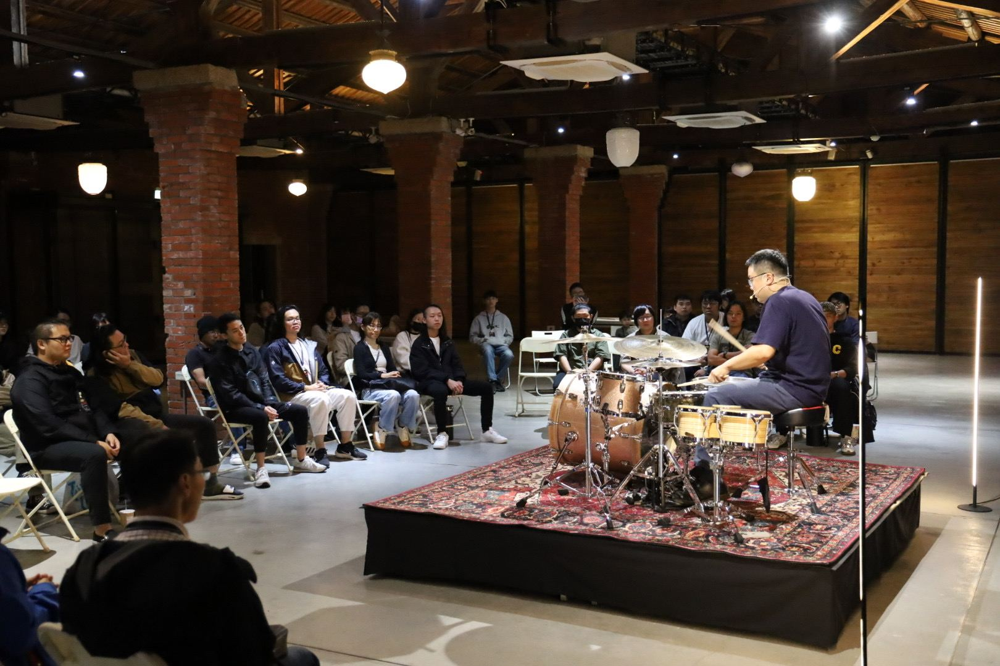
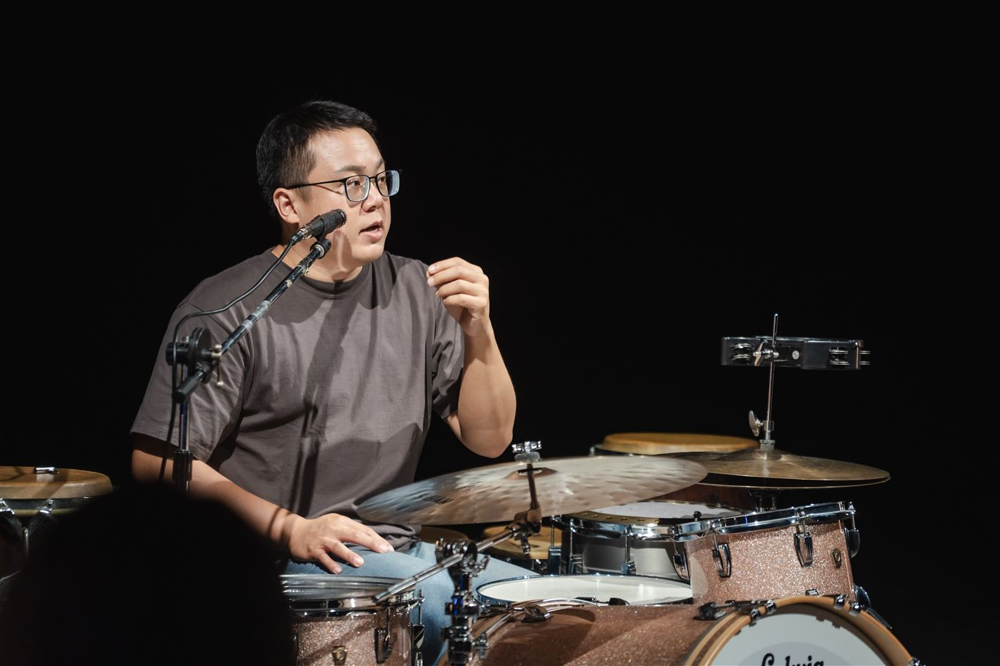

About the Studio
YICHENGLESSONSKeep playing and enjoy the rhythm
由鼓手王苡丞主理的爵士鼓教室與分享空間。從白牆教室裡的小班課程、講座式的經驗分享，到展演空間與紅磚老屋裡的現場 Session，我們把「先聽見節奏，再讓身體動起來」帶到不同場域——不比較技巧，只在意每一次下手的重量、呼吸與回彈。
- 課程與講座小班制爵士鼓課程、節奏與律動主題分享會
- 現場 Session以真實鼓組示範，讓聽覺與身體同時參與
- 零基礎友善不需打擊樂經驗，動作皆可替換或純聆聽





